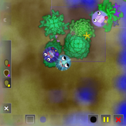
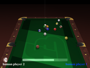
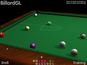
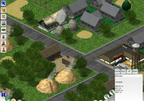
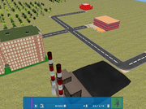
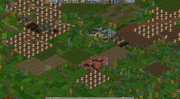
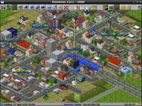

Simulationen
Zum Verständnis dieses Artikels sind folgende Seiten hilfreich:
Cultivation¶

Cultivation  ist die Simulation eines sozialen Systems von Kreaturen, die auf kleinen Inseln Pflanzen anbauen und um Ressourcen konkurrieren. Man steuert ein Individuum oder eine Familie von Gärtnern und versucht Nahrung zu sammeln und seine Gene erfolgreich zu verteilen. Der Reiz des Spiels besteht in den sozialen Interaktionen, zwischen Kooperation und Konflikt. Alle grafischen Elemente werden dynamisch generiert und vererben ihre Eigenschaften an ihre Nachkommen.
ist die Simulation eines sozialen Systems von Kreaturen, die auf kleinen Inseln Pflanzen anbauen und um Ressourcen konkurrieren. Man steuert ein Individuum oder eine Familie von Gärtnern und versucht Nahrung zu sammeln und seine Gene erfolgreich zu verteilen. Der Reiz des Spiels besteht in den sozialen Interaktionen, zwischen Kooperation und Konflikt. Alle grafischen Elemente werden dynamisch generiert und vererben ihre Eigenschaften an ihre Nachkommen.
Benötigtes Paket:
cultivation (universe)
 mit apturl
mit apturl
Paketliste zum Kopieren:
sudo apt-get install cultivation
sudo aptitude install cultivation
Foobillard¶

Foobillard ist ein Billardsimulator mit folgenden Spielmöglichkeiten: 8-ball, 9-ball, carambol und snooker.
Benötigtes Paket:
foobillard (universe)
mit apturl
Paketliste zum Kopieren:
sudo apt-get install foobillard
sudo aptitude install foobillard
BillardGL¶

BillardGL  ist ein 3D-Billardspiel
ist ein 3D-Billardspiel
Benötigtes Paket:
billard-gl (universe)
mit apturl
Paketliste zum Kopieren:
sudo apt-get install billard-gl
sudo aptitude install billard-gl
LinCity-NG¶

LinCity-NG eine Städte-Simulation ähnlich zu SimCity.
Benötigte Pakete:
lincity-ng (universe)
lincity-ng-data (universe)
mit apturl
Paketliste zum Kopieren:
sudo apt-get install lincity-ng lincity-ng-data
sudo aptitude install lincity-ng lincity-ng-data
OpenCity¶

Opencity ist eine 3D Städte-Simulation ähnlich zu SimCity.
Benötigte Pakete:
opencity (universe)
mit apturl
Paketliste zum Kopieren:
sudo apt-get install opencity
sudo aptitude install opencity
OpenTTD¶
 Wer hat es nicht gespielt? Das Spiel Transport Tycoon Deluxe war und ist eines der besten und beliebtesten Wirtschaftsstrategie-Spiele, die es gibt. Seit einiger Zeit gibt es nun auch das Projekt OpenTTD , ein TTD-Clone, welcher einige nützliche und bisher vermisste Funktionen hinzufügt. OpenTTD ist komplett in Deutsch spielbar.
Benötigte Pakete:
openttd (multiverse)
mit apturl
Paketliste zum Kopieren:
sudo apt-get install openttd
sudo aptitude install openttd
Weitere Informationen bietet der Artikel zu OpenTTD.
Simutrans¶
 Eine weitere Transport- und Wirtschaftssimulation ist Simutrans , bei der man für Wirtschafts- und Städtewachstum sorgt, indem man Passagiere, Post und Waren an ihr Ziel bringt. Sehr bald muss man ein hochkomplexes Netzwerk am Laufen halten.
Die verschiedenen Paksets haben nicht nur eine eigene Auswahl an Grafiken, sondern beeinflussen auch die wirtschaftlichen Aspekte des Spiels. Wer ein wenig Konkurrenz mag, kann das Spiel auch zu mehreren im Netzwerkmodus spielen.
Benötigte Pakete:
simutrans (universe)
simutrans-pak64 (universe)
simutrans-pak128.britain (universe)
mit apturl
Paketliste zum Kopieren:
sudo apt-get install simutrans simutrans-pak64 simutrans-pak128.britain
sudo aptitude install simutrans simutrans-pak64 simutrans-pak128.britain
- Erstellt mit Inyoka
-
 2004 – 2017 ubuntuusers.de • Einige Rechte vorbehalten
2004 – 2017 ubuntuusers.de • Einige Rechte vorbehalten
Lizenz • Kontakt • Datenschutz • Impressum • Serverstatus -
Serverhousing gespendet von